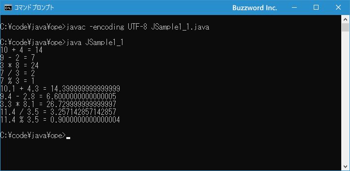
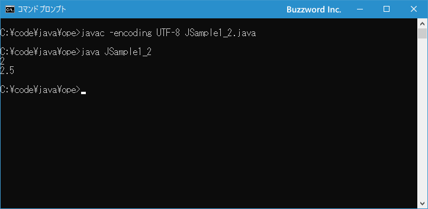

算術演算子
算術演算子は加算、減算、乗算、除算などの四則演算を行う演算子です。ここでは Java で用意されている算術演算子の種類と使い方について解説します。
算術演算子とは
算術演算子は数値を計算する場合に使用します。次のようなものが用意されています。
| 演算子 | 使用例 | 意味 |
|---|---|---|
| + | A + B | AにBを加える |
| - | A - B | AからBを引く |
| * | A * B | AにBを掛ける |
| / | A / B | AをBで割る |
| % | A % B | AをBで割った余り |
算術演算子は演算の対象(これをオペランドとも言います)が 2 つあり、演算を行うと数値の結果を得ることができます。
それぞれの演算子の使い方は次の通りです。整数と整数の値で演算を行っています。
int num; num = 10 + 4; // num = 14 num = 9 - 2; // num = 7 num = 3 * 8; // num = 24 num = 7 / 3; // num = 2 num = 7 % 3; // num = 1
演算を行った結果が左辺の変数に代入されます。
それでは簡単なサンプルプログラムを作って試してみます。テキストエディタで次のように記述したあと、 JSample1-1.java という名前で保存します。
class JSample1_1{
public static void main(String[] args){
System.out.println("10 + 4 = " + (10 + 4));
System.out.println("9 - 2 = " + (9 - 2));
System.out.println("3 * 8 = " + (3 * 8));
System.out.println("7 / 3 = " + (7 / 3));
System.out.println("7 % 3 = " + (7 % 3));
System.out.println("10.1 + 4.3 = " + (10.1 + 4.3));
System.out.println("9.4 - 2.8 = " + (9.4 - 2.8));
System.out.println("3.3 * 8.1 = " + (3.3 * 8.1));
System.out.println("11.4 / 3.5 = " + (11.4 / 3.5));
System.out.println("11.4 % 3.5 = " + (11.4 % 3.5));
}
}
コンパイルを行います。
javac -encoding UTF-8 JSample1_1.java
その後で、次のように実行してください。
java JSample1_1

int 型の値と int 型の値で演算を行った結果と、 double 型の値と double 型の値で演算を行った結果についてそれぞれ演算結果を画面に出力しました。
整数と浮動小数点数との演算
Java では算術演算子を使った演算を行うとき、次のルールに従って型変化を行った上で演算を行います。
(1) どちらかの値が double 型の場合は他の値を double 型に変換する (2) どちらかの値が float 型の場合は他の値を float 型に変換する (3) どちらかの値が long 型の場合は他の値を long 型に変換する (4) (1)から(3)に該当しない場合は両方の値を int 型に変換する
例えば int 型の値と int 型の値を加算(+)する場合はどちらも int 型なので型変換は行われずにそのまま演算が行われます。結果は int 型の値となります。
10 + 4; // 14
int 型の値と double 型の値を加算(+)する場合、先ほどのルールに従って int 型の値を double 型の値に変換したあとで演算が行われます。結果は double 型の値となります。
10 + 4.0; // 14.0
※ 演算のときの型変換に関する詳細は「演算の時に自動的に行われる型変換」を参照されてください。
注意が必要なのが除算(/)を行う場合です。次のサンプルをみてください。
System.out.println(10 / 4); // 2 System.out.println(10.0 / 4.0); // 2.5 System.out.println(10 / 4.0); // 2.5 System.out.println(10.0 / 4); // 2.5
int 型の値を int 型の値で除算した結果は int 型の値となります。そのため 10 / 4 の結果は 2.5 ではなく 2 になる点に注意してください。
このような場合、どちらかの数値をキャスト演算子を使って double 型に変換すると double 型で演算を行った場合の結果を得ることができます。
double d; int num1 = 10; int num2 = 4; d = num1 / (double)num2; // d = 2.5
それでは簡単なサンプルプログラムを作って試してみます。テキストエディタで次のように記述したあと、 JSample1-2.java という名前で保存します。
class JSample1_2{
public static void main(String[] args){
int num1 = 10;
int num2 = 4;
System.out.println(num1 / num2);
System.out.println(num1 / (double)num2);
}
}
コンパイルを行います。
javac -encoding UTF-8 JSample1_2.java
その後で、次のように実行してください。
java JSample1_2

int 型と int 型の除算を行った結果を出力したあと、片方の値を double 型に型変換してから同じように除算を行った結果を出力しました。
ゼロで除算したときの結果について
int 型の値を 0 で割った場合と、 double 型や float 型の値を 0 で割った場合で結果が異なります。
int 型の値を 0 で割ったり 0 で割った余りを取得すると、コンパイルの時点ではエラーになりませんが、プログラムの実行時に java.lang.ArithmeticException: / by zero というエラーが発生します。
int i = 10 / 0; // 実行時にエラー int j = 10 % 0; // 実行時にエラー
double 型の値を 0 で割っても実行時にエラーとはなりません。結果を出力すると Infinity となります。また 0 で割った余りを取得した場合も実行時にはエラーとなりません。結果を出力すると NaN となります。( float 型の場合も同じ結果となります)。
double d1 = 10.0 / 0; System.out.println(d1); // Infinity double d2 = 10.0 % 0; System.out.println(d1); // NaN
double 型や float 型の場合はコンパイル時も実行時もエラーとはなりません。
それでは簡単なサンプルプログラムを作って試してみます。テキストエディタで次のように記述したあと、 JSample1-1.java という名前で保存します。
class JSample1_3{
public static void main(String[] args){
System.out.println(10.0f / 0);
System.out.println(10.0f % 0);
}
}
コンパイルを行います。
javac -encoding UTF-8 JSample1_3.java
その後で、次のように実行してください。
java JSample1_3
float 型の値を 0 で割った値と 0 で割った余りをそれぞれ画面に出力しました。
-- --
Java で用意されている算術演算子の種類と使い方について解説しました。
( Written by Tatsuo Ikura )

著者 / TATSUO IKURA
初心者～中級者の方を対象としたプログラミング方法や開発環境の構築の解説を行うサイトの運営を行っています。